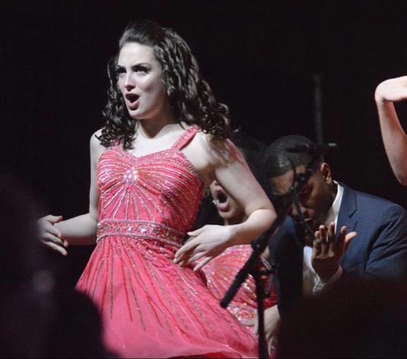

My artistic journey has been shaped by a diverse range of roles, from stage management in productions like "Polaroid Stories" and "Climate Change Theatre Action" at ISU Theatre, to my role as an Assistant Director in "Baba: A New Musical." These experiences have not only refined my organizational and leadership skills but have also instilled in me a profound appreciation for the collaborative nature of theater. My dedication to both stage management and creative direction has given me a unique perspective on the intricacies of theatrical production and the power of teamwork to bring stories to life.
In addition to my work in the theater, I bring a versatile skill set that includes makeup design, production assistance, and even directing and play-writing. My education at Iowa State University's Performing Arts program has been a continuous source of inspiration and growth, providing me with a solid foundation to explore the depths of storytelling and artistic expression. Fluent in both French and English, with skills ranging from stage management to puppetry and archery, I am committed to pushing the boundaries of my craft and creating art that engages, inspires, and challenges audiences. My artistic journey is a testament to the belief that the theater, with its rich tapestry of roles and responsibilities, is a powerful medium for exploring the human experience and pushing artistic boundaries.
